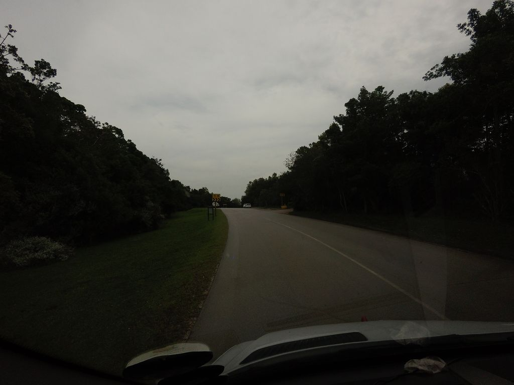
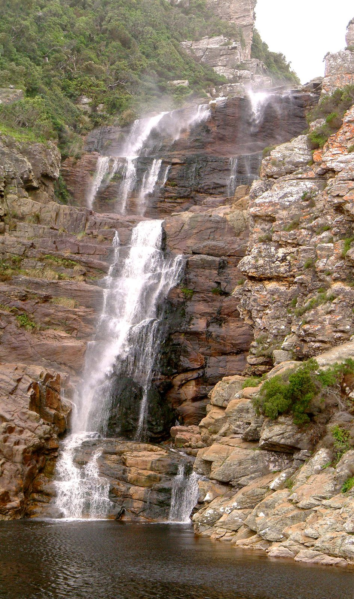
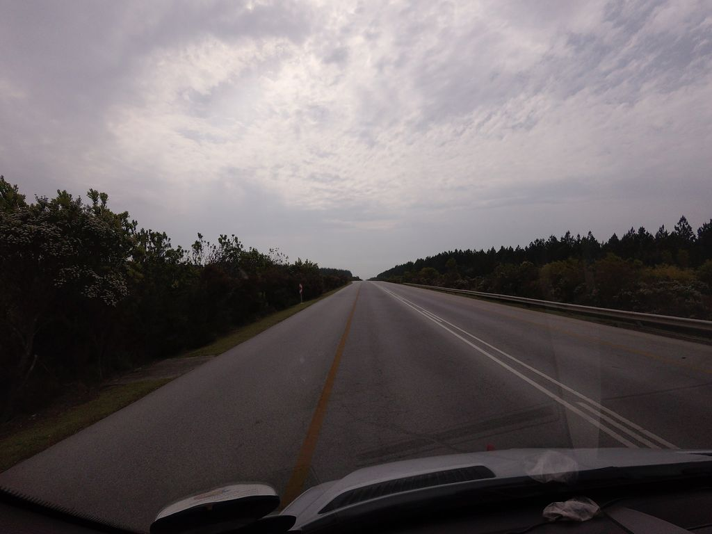
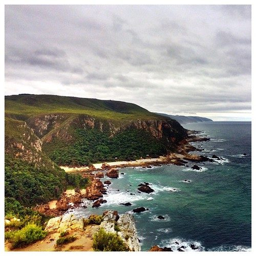
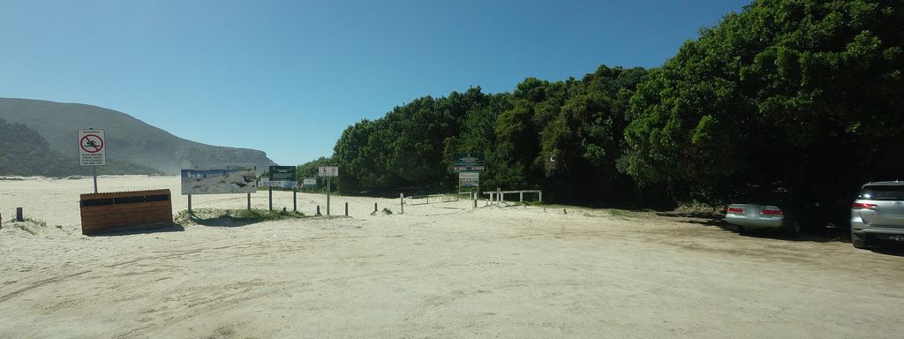

Otter Trail
Hike South Africa's oldest trail along five wild days of Tsitsikamma coast to Nature's Valley.
Otter Trail crosses South Africa for 37 km and ends at Nature's Valley. It starts at Storms River Mouth. Your ordinary week counts toward all of it: at 5,000 steps a day that's about a week, with no flights and no leave. Below are the 7 places you pass, each with its photograph and its story.
- 37km end to end
- 7landmarks
- a weekat 5,000 steps a day
- Nature's Valleyfinishes at

The landmarks of Otter Trail
7 landmarks, in walking order. Each photograph is by the person credited beneath it, used as they licensed it.
-

Photo: ankeric · Mapillary, CC BY-SA 4.0 Storms River Mouth
The Otter Trail begins at the mouth of the Storms River, where dark tannin-stained water meets the Indian Ocean in a gorge spanned by a swaying suspension bridge. This is South Africa's oldest formal hiking trail, five days along a wild, roadless coast. Dolphins and whales pass offshore. The path climbs at once into coastal fynbos above the surf.
-

Photo: PhilippN - Wikimedia Commons, CC BY-SA 3.0 Ngubu Huts
The first night's huts sit at Ngubu after a short but rugged day of rock scrambling and waterfalls, looking straight out over the ocean. A famous waterfall on this stretch plunges into a pool where hikers swim. The Tsitsikamma forest crowds right down to the shore. Only the sound of the surf breaks the quiet.
-
Scott Hut
Scott Hut marks the end of the second day, reached over headlands of ancient rock and through pockets of yellowwood forest. The surf breaks against the rocks below the path all day and half the night. Baboons bark from the cliffs and bushbuck slip through the yellowwoods. The huts are plain plank and tin, pitched where almost no one else could reach to build.
-
Oakhurst Hut
Oakhurst Hut sits near the Elandsbos River, the third night, after a day of steep ravines and river mouths. Otters, which give the trail its name, are sometimes seen in the estuaries at dusk. No road touches this coast along its whole length. Tomorrow brings the trail's hardest test, the Bloukrans.
-

Photo: ankeric · Mapillary, CC BY-SA 4.0 Bloukrans River
The Bloukrans River mouth is the crux of the Otter, a deep tidal crossing that must be timed to low tide or swum with packs floated in dry bags. Get it wrong and you wait, or turn back. It is the moment every Otter hiker remembers. Beyond, the last climb to the final huts begins.
-

Photo: DazMSmith - Flickr via Openverse, CC BY-SA 2.0 Andre Hut
Andre Hut, the last night, sits high above the sea after the Bloukrans crossing, with one of the finest views on the whole coast. Hikers reach it stiff and salt-caked from the river crossing. The huts face due west, straight into the sunset over the water. One short day remains to Nature's Valley.
-

Photo: tallguy · Mapillary, CC BY-SA 4.0 Nature's Valley
The trail ends at Nature's Valley, dropping off the cliffs onto a long crescent of white sand backed by lagoon and forest. Five days of wild coast lie behind. After five days without a road, the little village comes as a mild shock. The trail ends where the forest slides down to the lagoon and the sea.
Walking the Otter Trail
Your watch is already counting these steps. Watch Walks spends them on the Otter Trail, all 37 km of it, and hands you each landmark as you reach it. There's no route recording, no account and no ads. The Inca Trail is free; this one is a one-time purchase with no subscription.
Other trails in Africa
- Walk the Nile 1,500 km · Egypt
- High Atlas Traverse 303 km · Morocco
- Kilimanjaro (Machame Route) 45 km · Tanzania
- Mount Kenya (Chogoria Route) 39 km · Kenya
- Kilimanjaro (Lemosho Route) 70 km · Tanzania
- GR R2 (Réunion) 144 km · Réunion